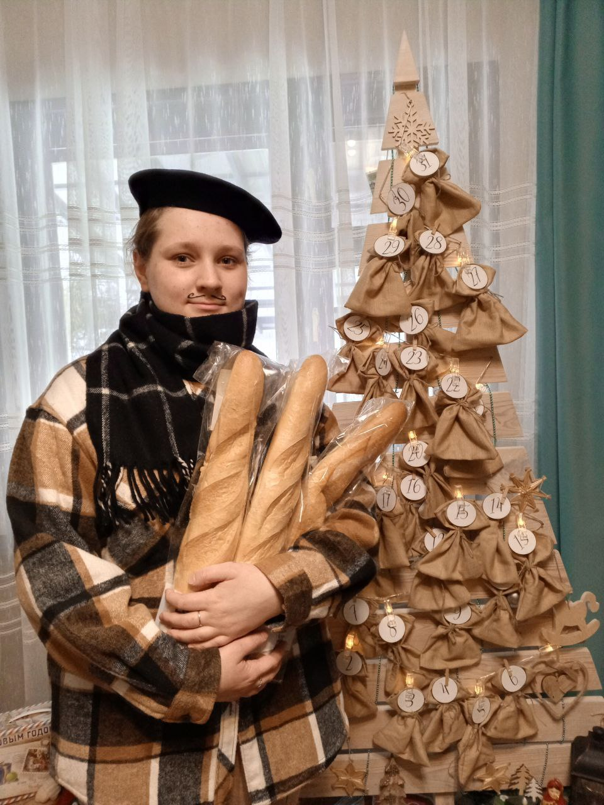
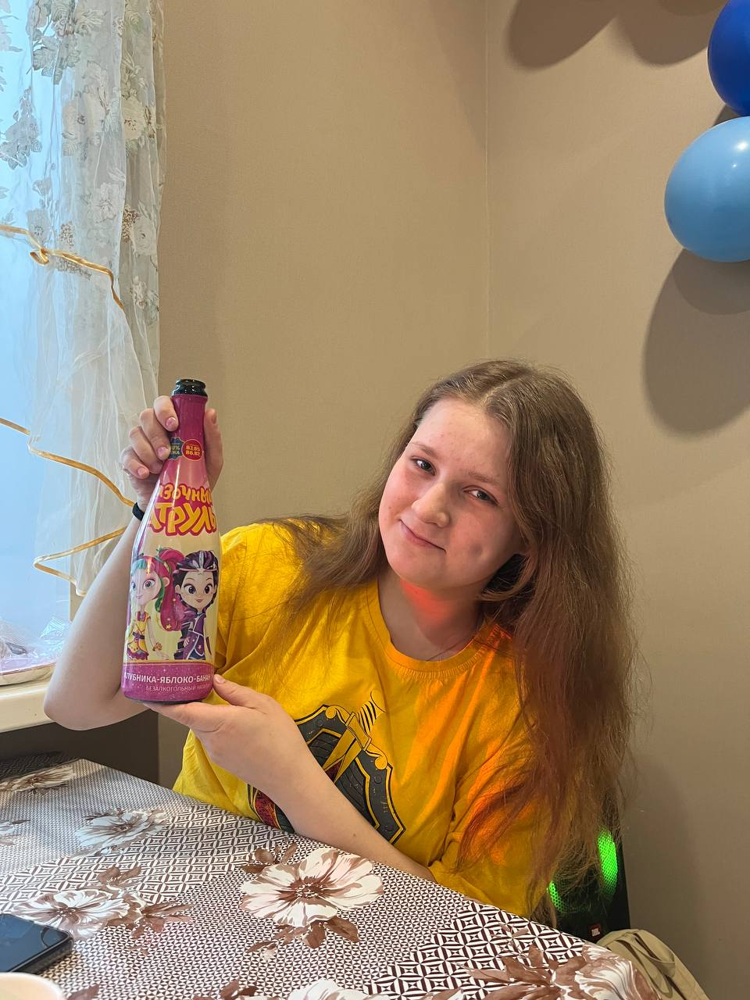
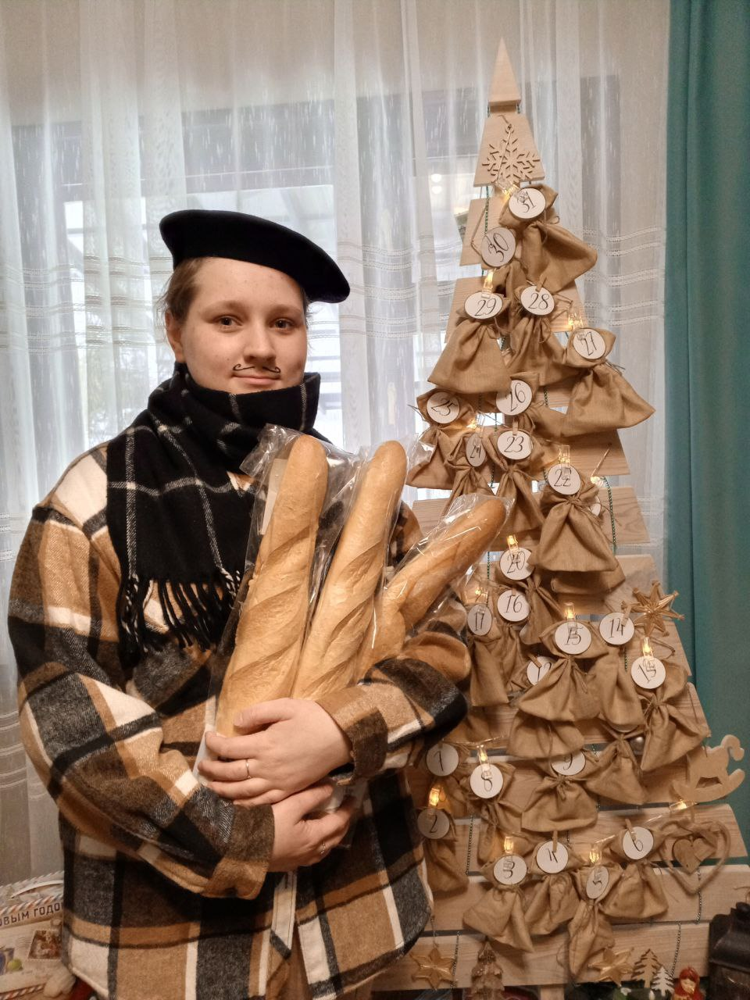
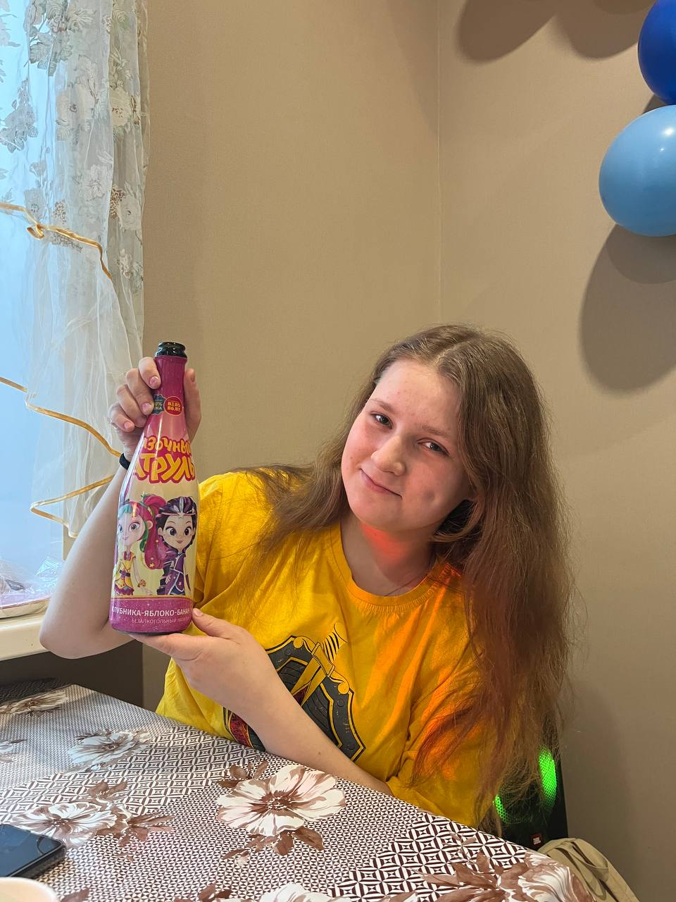
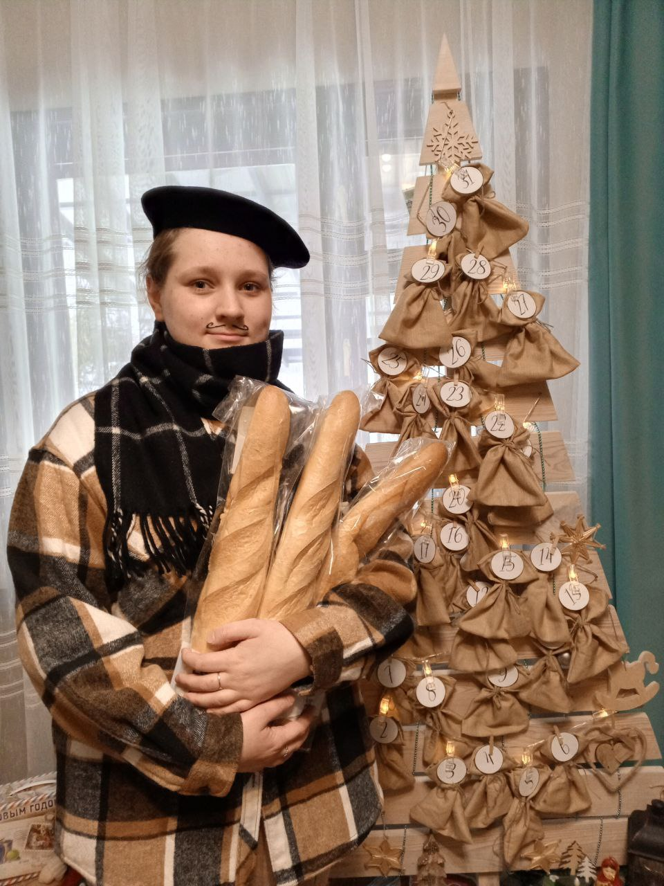
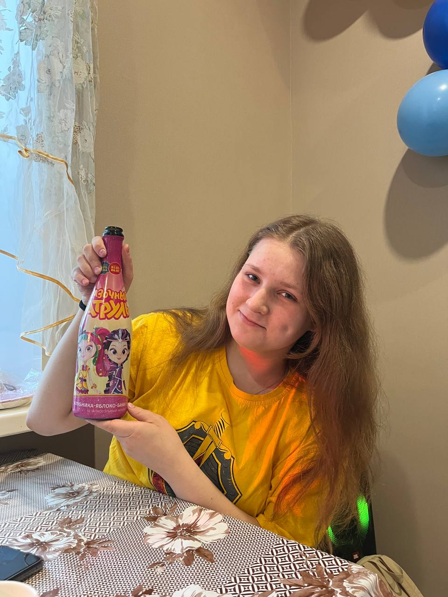

Главная
Образование
Семья
Хобби
Друзья
Главная
 
Привет! Меня зовут Воок Арина,мне 16 лет и я создала этот сайт, чтоб рассказать о себе.
Я родилась 23 декабря 2007 года в Рязани, живу в село Коростово недалеко от города.
 


